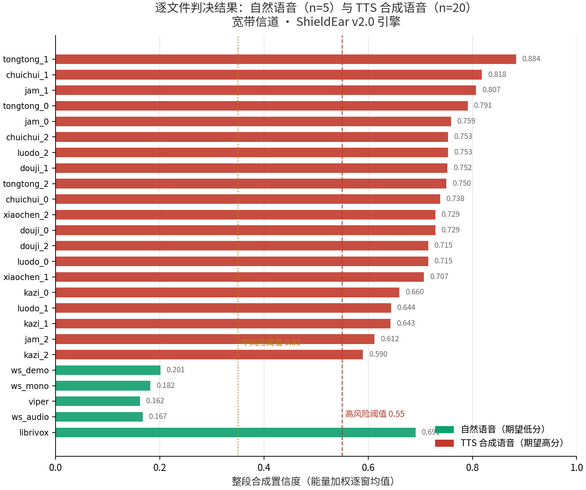

窄带电话信道
F1 0.876 / Acc 0.814——300–3400Hz 带宽直接抹掉高频信息，退化如实标注、不藏着
有声书边界
10/50 误判（引擎升级后逐位不变）——录音棚级自然音的生产洁净度与轻量特征耦合，这正是启动深度引擎的直接动机，而非调参掩盖
分组准确率 · GROUP DETAIL
N1 自然·原始n=100.80
N2 自然·鲁棒变体n=400.80
T1 合成·校准集n=400.925
T2 合成·独立集n=480.917
T3 合成·退化变体n=1200.875
权威基准——EER / AUC 已实测（综合 0.18 / 0.925）；ASVspoof 横评与 t-DCF 列入深度引擎阶段
本阶段实测——258 判决全量基线 + 分组准确率 + RTF + 时延（v2.1 引擎逐位复验）
业务端到端——无头浏览器全流程通过